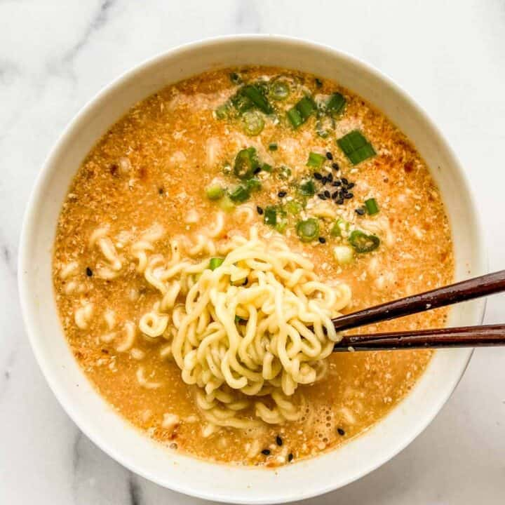

Quick Ramen with a Twist!

Description
I love Ramen. Instant, fresh, homemade, any of it! For a quick snack I like to take some instant ramen and make a few changes!
The options are really endless, I'm just going with one of my favorites! Feel free to make it any way that you'd like!
Ingredients
- Instant Ramen (Whatever flavor is preferred)
- One Egg
- Frank's Hot Sauce
Steps
- Follow instructions on your package of ramen.
- After the water is boiling, add some Frank's Hot Sauce. However much you'd like.
- Once the noodles are able to move around, add the seasoning packet and crack you egg into the broth.
- Sometimes I'll stir it all around immediately to make it look like a drop soup or leave the egg to poach in the broth!
Home